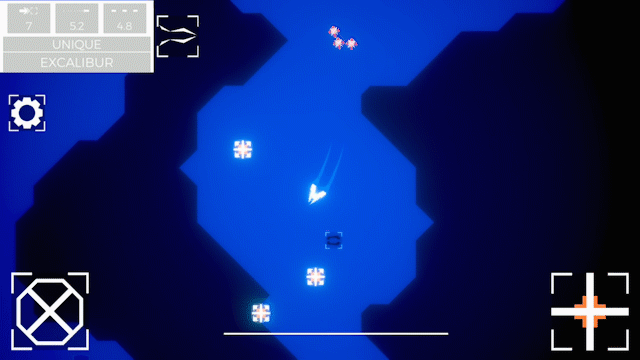
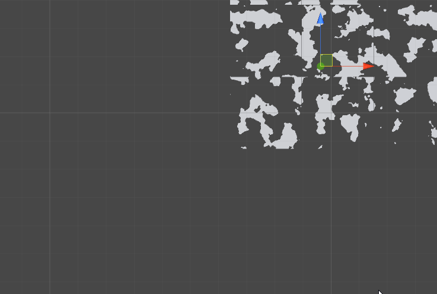
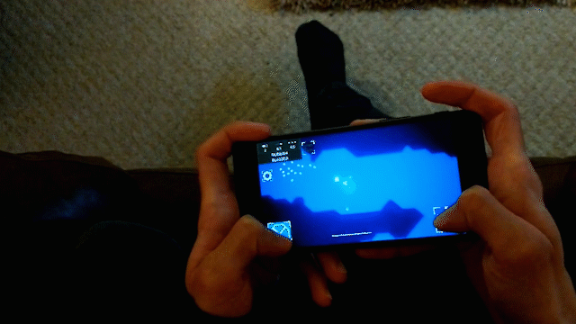

Venture
Venture is a procedurally generated roguelike shooter for Android, built solo in Unity for my Games Hardware & Architecture university module. The brief required an Android game controlled with the accelerometer or gyroscope; I built the whole thing in the final month before hand-in as a showcase of programming skills rather than a polished commercial game.
The Project
The module was an introduction to Unity with one hard constraint: the game had to run on Android and be controlled with the accelerometer or gyroscope. I'd already picked up experience with both from an earlier project, Valiant, so a lot of that input code carried straight over, which freed up time to spend on systems I found more interesting: procedural level generation, an object pooling framework, and a loot system with weapon rarity.

Procedural Level Generation
Levels are generated with cellular automata to rough out open and solid space, then marching squares to turn that grid into smooth walkable terrain outlines rather than blocky cells, an approach I learned from Sebastian Lague's tutorial series and built out for this project. I wanted to push it further with chunked terrain and Perlin noise for a fully continuous generated world, following the same tutorial series' terrain generation episodes, but ran into bugs I didn't have time to chase down before the deadline, so that layer was cut from the final build.

Object Pooling & Weapon Rarity
Enemies and projectiles run through an object pooling system (also following Sebastian Lague's approach) to keep instantiation cost off the frame budget on Android hardware. Weapons carry varied stats and a rarity tier that the level generator weighs when deciding what to spawn and where, pushing the run-to-run variety that makes the game feel like a roguelike rather than a fixed shooting gallery.

Post-Project Analysis
My project planning was absolutely abysmal. This game is a product of what I could accomplish in the last month before hand-in, after scrapping a few earlier prototypes I couldn't turn into a decent game idea. Even so, I'm happy with how it came together in that time; the result just made it obvious how much I needed to take planning more seriously going forward.
The Android APK and full source are both up on GitHub, grab the APK directly if you just want to try it.